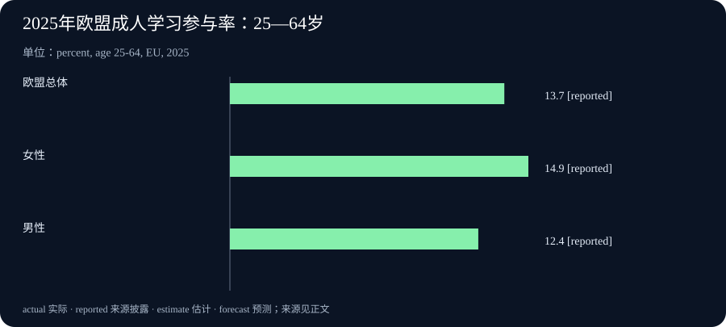

Daily Intelligence
2026-09-15 · Tuesday · 上海时间早间版。新闻主线来自 9 月 14 日公开的公司公告与 Eurostat 文章。部分新闻页直连未成功，相关事实依据检索工具返回的官方页面文本；统计定义及引语出处已打开核对。下文严格区分公司披露、未来计划、历史统计与本刊分析，不补造今日尚未发布的数据。
Today’s Thesis｜自动化扩散，取决于机器之外的互补投入
自动驾驶车辆展示了技术进入实体业务的可能性，企业培训和成人学习统计则提醒我们：技术更新与人员适应不是同一条时间线。本刊判断，下一阶段采用速度可能更多取决于配套流程、技能和运营体系是否跟上，而不只是模型是否进步。三条新闻并不构成因果证明，但提供了观察“技术供给—组织吸收—实际运行”三个环节的入口。
Executive Summary｜执行摘要
- 小马智行与广汽商用车展示基于 T9 纯电平台的新一代自动驾驶重卡，量产安排仍属于年内计划。产品发布、规模交付和实际经营效果应分别判断。9 月 14 日公告
- Coforge 宣布 9 月 15—16 日举行 TechCon 2026，以培训、实践和伙伴协作推动企业 AI 应用；参与活动不能直接证明岗位能力已经提升。公司公告
- Eurostat 的新文章回顾 2025 年成人学习参与情况。这是历史统计的专题发布，并非 2026 年 9 月即时调查，也不是 AI 专项培训统计。官方文章
- 今日可操作的重点：把一个拟自动化流程的异常处理、人员练习和配套投入列清，再判断部署条件是否具备。
AI Daily｜自动驾驶重卡：硬件降本不等于每趟运输都已降本
小马智行于 9 月 14 日 08:00 EDT 公告与广汽商用车合作的新款 L4 重卡，采用 T9 纯电平台及冗余架构，计划今年稍后量产。公司称自动驾驶套件的物料成本较上一代下降 70%，并预计吨公里运输成本下降 30%。前者是厂商披露的特定硬件口径，后者是预期效果，都不能改写成整车采购价或已验证车队利润。官方公告检索文本
本刊技术分析：实体环境与纯数字任务的一项差别，是错误会与制动距离、道路条件和周边参与者发生直接联系。冗余有助于应对某些组件故障，但有多套组件并不自动证明所有场景都安全。应了解系统在什么条件下工作、何时停止、如何进入安全状态，以及外部环境变化后如何重新验证。这些问题不是对该车型存在缺陷的断言。
运营条件同样重要。固定线路、港区与开放道路的约束并不相同；线路稳定不意味着天气、施工或其他车辆行为都可预测。更合理的验收单位是特定条件下的完整运输任务，而不是车辆在一次演示中驶过某段道路。公告提及的运输场景提供了方向，不能代替逐项运行证据。
对于降本，应分别核对硬件、能源、维护、调度、异常接管与空驶。一个组件变便宜，不会按相同比例降低总成本；反过来，即使购置成本变化不大，车辆利用方式改善也可能产生收益。后者仍然需要实际线路记录，本期没有自行估计车队利用率、接管频率或事故率。
下一步值得观察的信号是：量产是否按计划发生，车辆是否进入明确披露的运营范围，以及客户是否提供带分母和时间窗口的成本数据。对于涉及人身安全的技术，案例数量和曝光量不能替代安全评估；没有披露某项数据，也不能据此认定该项表现为零或已经失败。
Business Daily｜Coforge 把培训放进企业 AI 应用议程
Coforge 的 9 月 14 日公告将 TechCon 2026 安排在 9 月 15—16 日，包含课程、讨论和实践展示。公司称相关 AI 黑客松吸引超过 3,000 人参与，并以其 46,000 名员工群体为活动背景。后一个数字不是已经完成培训或通过技能考核的人数；公告表达的是公司计划与参与情况，不是经独立验证的客户成效。公司发布文本
本刊商业分析：技术服务企业的一项潜在优势，是将分散项目中的经验转成重复交付能力。但“让员工了解新工具”与“让团队在真实任务中稳定使用”之间仍有距离。后者可能需要共享样例、排错经验、客户场景知识及明确的交接方式，不能只依靠一次集中活动完成。
培训投入的回报也不宜只以活动规模衡量。课程完成率回答的是参与过程，任务练习回答的是能否应用，后续项目记录才更接近业务效果。三种证据可以相互补充，但不能互相代替。若只记录报名人数，企业可能无法区分真正的能力变化与一次营销或内部动员活动。
一个可执行的观察办法，是从培训前后各取一组相似且已获授权的工作样本，比较是否能够独立完成、需要多少帮助、遇到异常能否识别。再观察这些能力能否在不同客户场景中迁移。这里提出的是评估办法，没有声称 Coforge 已采用或未采用这套方法，也不据公告判断其投资回报。
二阶影响在于经验的分布。若只有少量专家能修复失败，应用规模扩大可能反而增加专家负担；若基础问题可以被更多员工正确解决，专家才可能集中处理新问题。企业应同时观察能力覆盖和升级处理量，避免将“工具已经发给所有人”当成组织已经具备相同能力。
Macro Observation｜成人学习是吸收能力的背景，不是即时生产率
Eurostat 9 月 14 日文章给出的 2025 年欧盟成人学习参与率为 13.7%，女性为 14.9%，男性为 12.4%。这些数值描述教育与培训参与，不能解释成 AI 使用率、技能考试通过率或生产率增幅。官方专题文章
指标来自劳动力调查，对象为 25—64 岁人群，考察受访前四周是否接受正规或非正规教育培训，包含与工作相关及不相关活动；分母排除未回答该问题的人。四周是调查回看窗口，2025 年是统计参考年，并非只调查了 2025 年中的某四周。元数据还提示 2021 年存在时间序列断点，因此本期不画跨断点的增长曲线。统计定义及可比性
本刊宏观解释：新技术能否转化为生产能力，可能受学习机会、岗位组织和配套投资共同影响。参加学习是其中一个可观察环节，但没有告诉我们学了什么、质量如何或能否应用。一个地区参与率较高，不足以证明其某项技术采用更成功；低参与率也不能直接推出个人能力不足。
对企业而言，人员学习占用的时间是一项真实资源约束。若员工没有可安排的练习时间，即使课程免费，采用仍可能受阻；若培训与实际工作脱节，完成课程也未必减少日常摩擦。这些是一般机制，不是对本次欧盟统计变化的因果解释。
观察劳动市场时，宜将岗位需求、培训参与、任务能力和收入变化分别记录，再通过合适研究判断联系。本期没有新增就业或工资数据，不据此预测失业，也不把成人学习统计用作短期交易依据。宏观视角的价值，是帮助看见技术扩散所需的条件，而不是给单个指标附加超出其定义的含义。
Signal Dashboard｜三个不同阶段，三类不同证据
| 主题 | 当前可见信号 | 尚不能证明 | 后续验证方向 |
|---|---|---|---|
| T9 自动驾驶重卡 | 车型公告、套件成本披露、量产计划 | 规模运营中的安全与利润结果 | 交付、运行范围及完整任务数据 |
| TechCon 2026 | 活动计划及参与者描述 | 员工已具备同等应用能力 | 独立练习及项目迁移表现 |
| 欧盟成人学习 | 2025 年参与率统计 | AI 技能或生产率已经提高 | 培训内容、应用及后续结果 |
| 组织吸收能力 | 本刊提出的观察框架 | 任一企业的实际表现 | 异常处理、专家负担和持续使用 |
前三行分别对应上述一手材料，最后一行是分析框架。表内“尚不能证明”表示当前证据范围有限，不表示相关结果一定不存在。
Deep Insight｜采用技术不是替换一个组件，而是调整一组互补条件
以下为本刊综合分析。设想一个物流运营者考虑采用新车辆：即使车辆本身满足要求，还要安排线路、补能、维护、调度和异常处理。任何一环跟不上，都可能使其他投入暂时闲置。相似结构也存在于知识工作：模型可以生成结果，但人员若无法判断输入是否合适、输出何时可用，工具能力就难以完整转化为工作能力。
这并不意味着所有环节都要同时大规模改造。更可控的做法，是先找到最限制实际结果的条件。若问题是材料质量，增加培训课时未必有效；若问题是人员不了解异常信号，更昂贵的工具也未必解决。诊断应从具体失败案例开始，而不是从某类解决方案开始。先问哪一步使任务不能完成，再讨论需要什么投资。
互补条件还会影响投入顺序。过早采购大量设备，可能等待配套就绪；过早培训尚未确定的操作方式，也可能产生重复学习。一个可检验的实施节奏是：先在边界清楚的小范围完成闭环，再用发现的问题决定下一步。扩大范围应由稳定的运行证据支持，而不是由展示效果或短期热度决定。小范围不意味着降低质量要求，而是让错误更容易被观察和纠正。
人员角色往往需要重新描述，但不能据此预言净就业结果。自动化可能减少某些重复动作，同时增加检查、维护、协调或异常处理需求；这些变化是否形成更多或更少岗位，取决于需求规模和实际组织选择。企业至少可以先写清哪些任务改变、哪些职责保留、哪些新能力需要练习，而不是直接把“使用 AI”换算成某个裁员比例。
培训也应围绕任务展开。一个员工能够演示工具，并不意味着他能判断工具什么时候不该用。练习可以同时包含正常、含糊和失败情景，要求参与者说明继续、暂停或升级的依据。真正有价值的学习成果，是遇到未见过的情况时仍能作出合理判断。考核若只复现课堂演示，可能高估岗位准备程度；这是假设性的评估风险，需要实际样本检验。
对于管理者，关键是避免让配套成本消失在不同部门的表格之间。采购看到工具价格，业务看到输出速度，技术团队看到维护负担，员工感受到学习时间。若这些观察不在同一个任务范围内汇总，组织容易低估采用的真实代价。汇总不需要把所有因素强行变成金额；安全、权限和职责边界可以作为不可突破的条件单独保留。
本刊的判断是，未来值得重视的竞争差异，可能不仅是“拥有更强技术”，还包括“更快识别缺失的互补条件”。这不是拒绝技术进步，而是让技术进步能够被实际使用。验证这一判断，需要持续记录从试点到稳定运行的时间、失败原因及学习负担，而不是只追踪发布了多少功能或安排了多少培训。
Tomorrow Watch｜看活动后的证据，而非预写活动成果
Coforge 将活动安排至 9 月 16 日，因此明日可关注是否出现具体案例、可检查的方法或后续材料；这只是依据公开日程设置观察点，不预言活动结束后一定发布成果。活动安排
自动驾驶方面，继续观察量产与实际部署信息，但公告没有给出明日交付承诺，不把跟踪方向写成固定事件。统计方面，若采用成人学习数据做比较，先核对分母、年龄范围和参考期，不能将年度统计逐日更新。没有新增可靠资料时，保留原状态。
One Chart｜欧盟成人学习参与率：同一年、同一调查窗口

| 人群 | 参与率 | 指标含义 |
|---|---|---|
| 欧盟总体 | 13.7% | 2025 年，受访前四周有教育培训参与 |
| 女性 | 14.9% | 相同性别年龄组口径 |
| 男性 | 12.4% | 相同性别年龄组口径 |
三根柱均为同一参考年的比例，不是时间趋势，也不能相加。总体不是简单取两个比例的平均值。图表描述参与而非培训时长、内容或效果；性别差异不能由这些汇总数直接解释。数值来源 指标口径
Quote of the Day｜用构建检验理解
“What I cannot create, I do not understand.”
— Richard Feynman
中文：凡我不能创造的，我就不理解。
出处：Caltech Magazine 的《Biology through the Eyes of a Physicist》记述这句话出现在费曼的黑板上。校方文章
本刊解读：把理解转成可以检验的构建，是发现遗漏的一种方法；但做出一次演示仍不等于已经理解所有条件，更不能替代正式验证。
Action Items｜今天可以完成的小范围检查
- 选一个准备自动化的流程，写出工具之外必须配合的条件：输入、人员、系统、时间和异常处理；找出最可能阻塞运行的一项。
- 为一项新技能设计正常与异常两类练习，观察能否独立判断，而不只统计课程是否看完。仅使用已获授权且去敏的样本。
- 检查一张正在使用的统计图，补齐人群、分母、参考期及“参与还是效果”的定义；删除来源没有支持的因果结论。